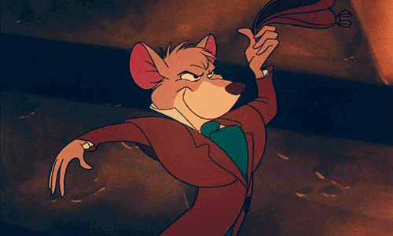

A ERA DE BRONZE (1970 - 1988)
|
A luta para manter viva a magia após a morte de Walt Disney foi um desafio para o estúdio. Esse período ficou marcado por filmes de alto orçamento, mas que não rendiam bem nas bilheterias e não eram bem avaliados pelos críticos.
 Outro detalhe foi a introdução da técnica xerografia, que agilizava o processo de animação e o tornava mais barato, mas precisava usar linhas mais grossas, o que fez algumas produções terem um aspecto mais sombrio e até "riscado". O Caldeirão Mágico é um dos filmes que marcou esta fase, e quase fez o estúdio falir pelo seu alto custo e pouco retorno, arrecadando apenas US $21 milhões contra um orçamento de US $44 milhões. Além dele, também foram lançados nesta época Robin Hood, As Peripécias de um Ratinho Detetive, Os Aristogatas, Bernardo e Bianca e O Cão e a Raposa. |